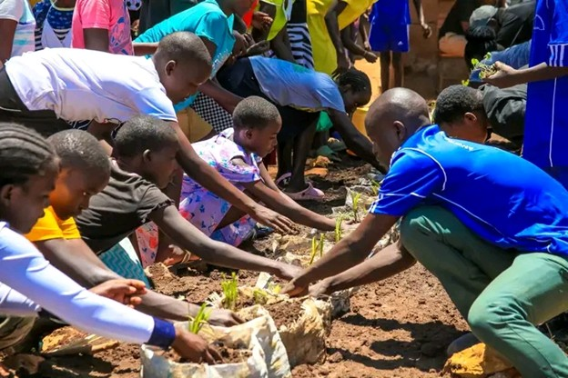

Flagship
School Wicking Garden Program
We partner with primary and secondary schools to install wicking container gardens that serve as living laboratories. Students learn sustainable agriculture while producing fresh vegetables for school meals.
Bring to your school